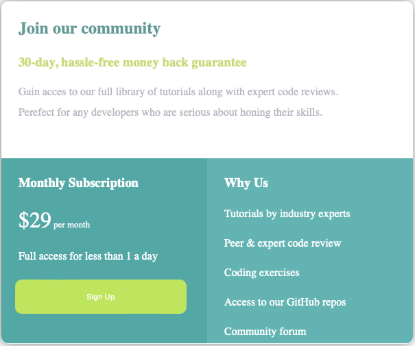
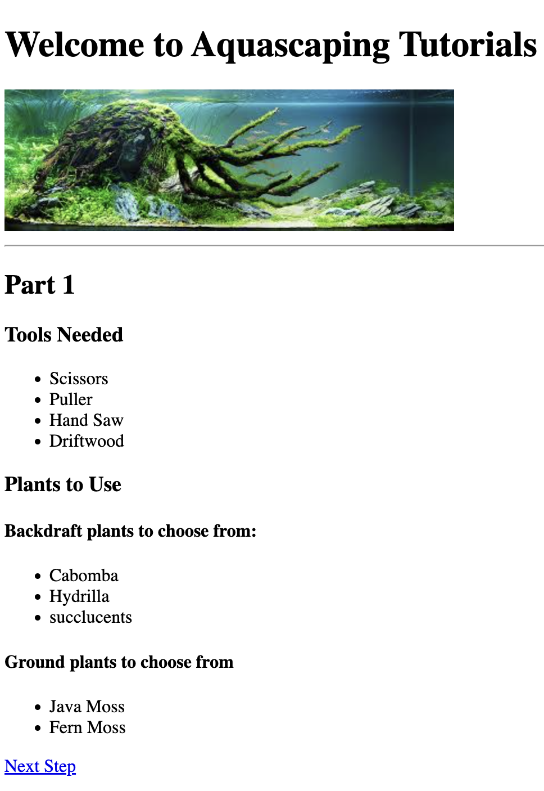

Welcome Aboard
Hi, I'm Chris and I am A Future Full Stack Web Developer
Get to know me
more
Projects that I have Aced
Sample template for subscriptions

Aquascaping Tutorial Website

Birthday Card Invite
Anime Ranking Project list
Contact Me